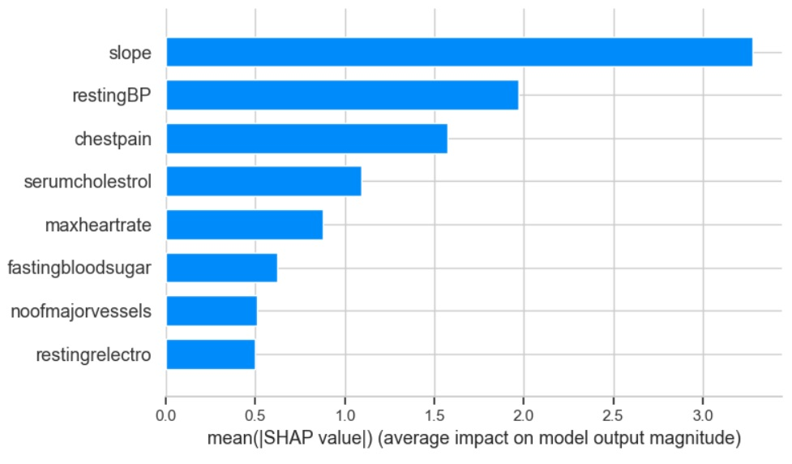
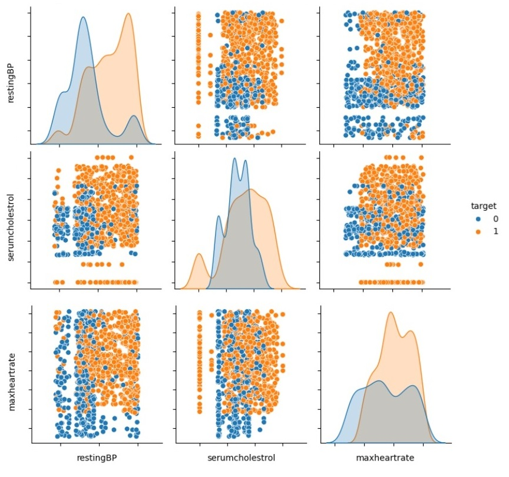
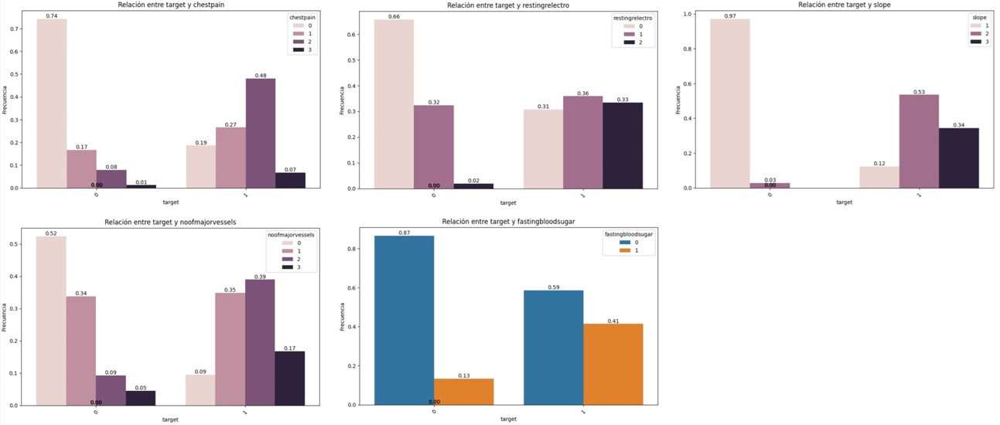
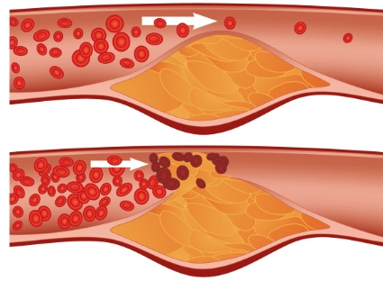
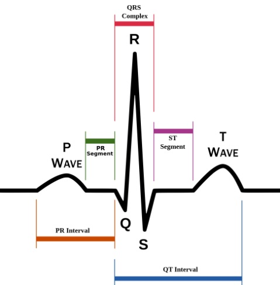
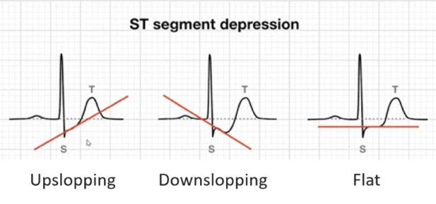
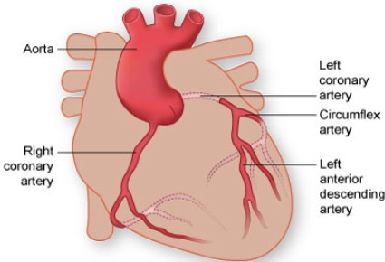

Heart Health
Here you can select or add the values in each category and get the results.
Your results are:
Did you know...?
Sharing interesting insights and discoveries about hearth diseases.
Did you know these probabilities?
- Probability that a man has a heart disease: 58,43% and a woman: 56,59%
- Probability that a person with high serum cholesterol (>200) has heart disease: 58,64%
- Probability that a person with chest pain type 2 or 3 has very high serum cholesterol: 89,57%
Did you know which variables determine the probability of having heart disease the most?

The three features with most correlation with the target are maxheartrate, serumcholesterol and restingBP.
At the same time, they are highly correlated with other ones:
- Max heart rate:
Max heart rate is highly correlated with chest pain, slope and number of major vessels.
- Serum cholesterol:
Serum cholesterol values are highly correlated gender, chest pain, resting blood pressure, fasting blood sugar, resting electrocardiogram, slope and number of major vessels.
- Resting blood pressure:
Resting blood pressure highly correlated with chestpain, serum cholesterol, fasting blood sugar, resting electrocardiogram results, slope of the ST segment, and the number of major vessels affected.

See in the SHAP plot that the variable with more weight is slope.
The slope is correlated with slope, chestpain, restingBP, serumcholestrol, fastingbloodsugar, restingrelectro, maxheartrate, oldpeak, noofmajorvessels.
Plottering the relations between numerical features against the target:

Plottering the relations between categorical features against the target:

Definitions
This section helps you to understand the significance of each clinical feature.
Age
In clinical settings, age is crucial for assessing health risks, diagnosing conditions, and determining appropriate treatments. It plays a significant role in understanding disease prevalence, response to therapies, and overall health outcomes.
Gender
It can influence health outcomes, access to healthcare services, and the experience of health and illness.
Chest pain type
Chest pain type refers to the categorization of symptoms related to chest discomfort or pain that patients report.
There are 4 possible types:
- Typical Angina: The pain is often described as squeezing, pressure, heaviness, or tightness in the chest. It may radiate to the left arm, shoulder, jaw, or back. Patients may also experience shortness of breath, sweating, or nausea.
- Atypical Angina: The pain may be sharp, stabbing, burning, or dull.
- Non-Anginal Pain: It may originate from other structures within the chest, such as muscles, bones, nerves, or the gastrointestinal tract.
- Asymptomatic: There are no symptoms of chest pain or discomfort reported by the patient.
Resting blood pressure
Measurement of the force of blood when the body is at rest and the heart is not actively pumping blood (i.e., during relaxation).
Serum cholesterol
Level of cholesterol present in the blood serum (LDL + HDL). Cholesterol is a waxy substance that is essential for building cell membranes, producing certain hormones, and synthesizing vitamin D. However, high levels of cholesterol in the blood can increase the risk of heart disease and stroke.

Fasting blood sugar
Level of glucose (sugar) in the bloodstream after a period of fasting, typically for at least 8 hours. It provides insights into the body's ability to regulate glucose during periods of fasting. Elevated levels may indicate impaired glucose tolerance or diabetes mellitus, while low levels can sometimes indicate conditions such as hypoglycemia.
Resting electrocardiogram results
Refer to the outcomes of an ECG test performed while the patient is at rest. An ECG is a non-invasive test that measures the electrical activity of the heart to identify various cardiac conditions.
Three possible values:
- Normal: Within the expected range and no significant abnormalities. Normal heart rhythm and electrical conduction.
- ST-T Wave Abnormality: This value indicates abnormalities in the ST segment or T wave on the ECG.
- Probable or Definite Left Ventricular Hypertrophy by Estes' Criteria: This value indicates the presence of left ventricular hypertrophy (LVH).

Maximum heart rate achieved
Highest number of beats per minute (bpm) that a person's heart reaches during a stress test. This feature helps healthcare providers assess how well the heart is functioning, detect abnormal heart rhythms, and diagnose conditions like coronary artery disease.
Exercise induced angina
Chest pain or discomfort that occurs during physical exertion or stress and typically subsides with rest. It is a symptom of underlying heart conditions.
Oldpeak = ST
Depression or elevation in the ST segment of an electrocardiogram (ECG) reading during peak exercise compared to the baseline level when at rest.
Slope of the peak excercise ST
Incline of the ST segment during maximal exercise in a cardiac stress test (exercise ECG).
- Upsloping: Indicates a gradual upward change of the ST segment during exercise. This is considered a normal response.
- Flat: The ST segment remains horizontal during exercise. This interpretation can vary depending on clinical context and other factors.
- Downsloping: Involves a downward descent of the ST segment during exercise. This response may indicate an underlying issue such as myocardial ischemia (inadequate blood flow to the heart).

Number of major vessels
Number of narrowings or blockages in each vessel, as well as the overall extent of coronary involvement, which is crucial for determining appropriate management and treatment, ranging from lifestyle changes and medications to invasive procedures such as angioplasty or coronary bypass surgery.
